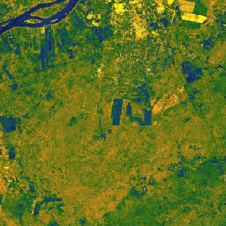
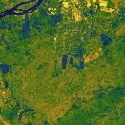
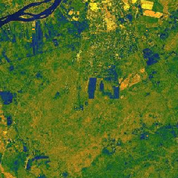

<!DOCTYPE html>
<html lang="en">
  <head>
    <meta charset="utf-8" />
    <meta name="viewport" content="width=device-width, initial-scale=1" />
    <title>Desertification early-warning score — NISAR</title>
    <link rel="stylesheet" href="https://unpkg.com/leaflet@1.9.4/dist/leaflet.css" />
    <style>
      html, body { height: 100%; margin: 0; font-family: "Segoe UI", system-ui, sans-serif; background: #140e08; color: #f6efe4; }
      #map { position: absolute; inset: 0; }
      .panel {
        position: absolute; z-index: 500; top: 12px; left: 12px; width: min(400px, calc(100% - 24px));
        background: rgba(20, 14, 8, 0.9); border: 1px solid rgba(232, 168, 56, 0.5);
        border-radius: 14px; padding: 16px;
      }
      h1 { font-size: 1.05rem; margin: 0 0 6px; }
      p { font-size: 0.8rem; line-height: 1.4; color: #e7d7c3; margin: 0 0 8px; }
      .shots { display: grid; grid-template-columns: 1fr 1fr 1fr; gap: 6px; }
      .shots img { width: 100%; height: 88px; object-fit: cover; border-radius: 6px; }
      figcaption { font-size: 0.65rem; color: #c8b49a; }
      figure { margin: 0; }
      #stats { font-size: 0.75rem; line-height: 1.4; }
      a { color: #f0c36a; }
    </style>
  </head>
  <body>
    <div id="map"></div>
    <aside class="panel">
      <h1>Vegetation-structure loss</h1>
      <p>Caatinga near Petrolina. NISAR L-band, same orbit, 5 Sep to 23 Oct 2026. Amber is where cross-pol dropped on land that was vegetated in September.</p>
      <p>This score is an early input to a desertification index. One dry-season cycle is not desertification.</p>
      <div class="shots">
        <figure><figcaption>5 Sep</figcaption></figure>
        <figure><figcaption>23 Oct</figcaption></figure>
        <figure><figcaption>Loss score</figcaption></figure>
      </div>
      <p id="stats"></p>
      <p><a href="index.html">Flood map branch view</a></p>
    </aside>
    <script src="https://unpkg.com/leaflet@1.9.4/dist/leaflet.js"></script>
    <script>
      const map = L.map("map").setView([-9.4, -40.5], 11);
      L.tileLayer(
        "https://gibs.earthdata.nasa.gov/wmts/epsg3857/best/BlueMarble_ShadedRelief_Bathymetry/default/GoogleMapsCompatible_Level8/{z}/{y}/{x}.jpeg",
        { maxNativeZoom: 8, maxZoom: 16, attribution: "NASA GIBS · NISAR GCOV" }
      ).addTo(map);

      fetch("desert/bounds.json").then((r) => r.json()).then((b) => {
        const bounds = [[b.south, b.west], [b.north, b.east]];
        L.imageOverlay("desert/index.png", bounds).addTo(map);
        map.fitBounds(bounds);
      });
      fetch("desert/index.geojson").then((r) => r.json()).then((geo) => {
        L.geoJSON(geo, {
          style: { color: "#f0c36a", weight: 2, fillColor: "#e8a838", fillOpacity: 0.15 },
          onEachFeature: (f, layer) => layer.bindTooltip(`${f.properties.ha} ha · score ${f.properties.score}`),
        }).addTo(map);
      });
      fetch("desert/index_stats.json").then((r) => r.json()).then((s) => {
        document.getElementById("stats").innerHTML =
          `<strong>${s.risk_ha} ha</strong> above the loss threshold.<br>` +
          `Mean score where green dropped: ${s.mean_score_where_loss}.<br>${s.geometry}`;
      });
    </script>
  </body>
</html>
